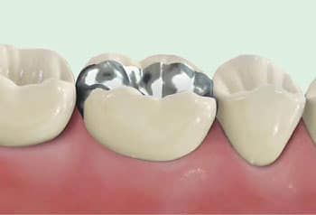
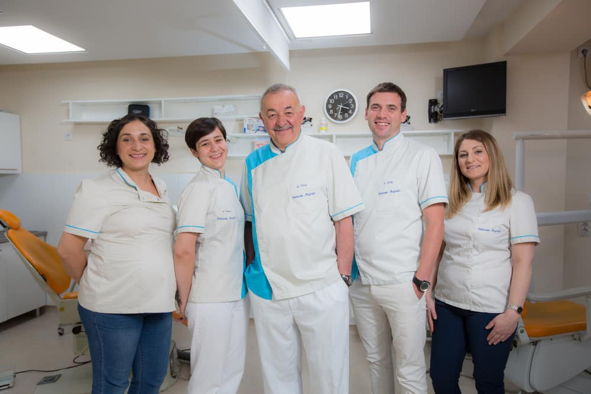
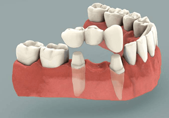
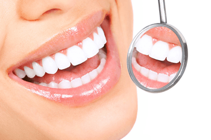
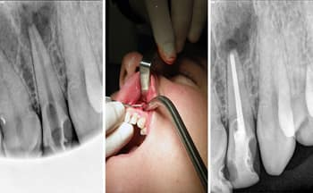
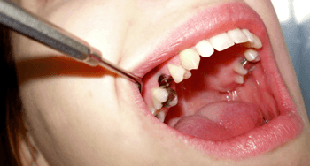
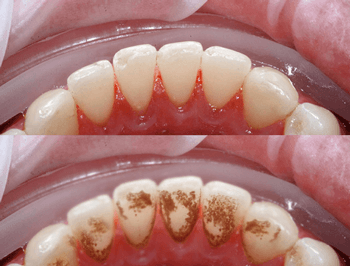
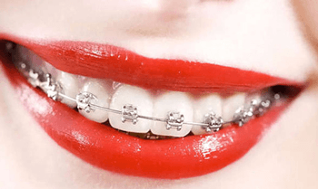
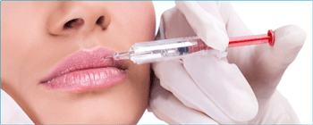

Konzervativna stomatologija
Dijagnostika i terapija oboljenja zuba — amalgamske („sive“) i kompozitne („bijele“) plombe, te inlay i onlay ispuni izrađeni od keramike ili kompozita.
Stomatološka ordinacija Maglajlić postoji više od tri decenije i predstavlja simbol kvalitetne i napredne stomatologije u Banjoj Luci.

Ordinaciju je prije više od 30 godina osnovao dr Velid Maglajlić, koji je napustio mjesto šefa stomatološke službe banjalučke poliklinike kako bi otvorio jednu od prvih privatnih stomatoloških ordinacija u regiji.
U početku smo bili specijalizovani za stomatološku protetiku — krune, mostove, proteze i implantate — te opštu konzervativnu stomatologiju. Tokom protekle decenije proširili smo se na sve stomatološke grane, uključujući implantologiju u kojoj pratimo sva najmodernija rješenja i tehnologije, te face lifting hijaluronskim filerima.
Od prevencije do najsloženijih zahvata — pokrivamo svaku granu moderne stomatologije.

Dijagnostika i terapija oboljenja zuba — amalgamske („sive“) i kompozitne („bijele“) plombe, te inlay i onlay ispuni izrađeni od keramike ili kompozita.

Fiksni nadomjesci — krune i mostovi (metal-keramika ili bezmetalna keramika) — te mobilne proteze, potpune i djelimične, sa stabilnošću putem „attachmenata“.

Izbjeljivanje cijelog zubnog niza (ordinacijsko i kućno) te pojedinačno izbjeljivanje avitalnih, prebojenih zuba nakon endodontskog tretmana.

Uklanjanje frenuluma, apikotomija, komplikovane ekstrakcije zuba, hemisekcija i nivelacija grebena — uz nježan i siguran pristup.

Titanijumski implantati koji oponašaju prirodni korijen zuba — nose pojedinačne krune, mostove ili služe kao retencija za proteze.

Uklanjanje zubnog kamenca, liječenje i prevencija oboljenja potpornog aparata zuba te regenerativna terapija parodonta.
Zalivanje fisura kod djece, uklanjanje kamenca i edukacija o pravilnoj oralnoj higijeni — najbolja zaštita zdravog osmijeha.

Fiksni metalni i estetski keramički bravice, Damon sistem te prozirni alajneri (clear aligners) za diskretno poravnanje zuba.

Vraćanje volumena lica, ublažavanje bora i naglašavanje usana hijaluronskim filerima — za skladan i prirodan izgled.
Osnivač ordinacije s više od tri decenije iskustva u protetici i implantologiji.
Posvećen savremenim protokolima liječenja i sveobuhvatnoj brizi o pacijentima.
Ljubazan i posvećen tim koji brine da se osjećate ugodno tokom svake posjete.
Zakažite svoj termin danas — subotom radimo po dogovoru.
Nalazimo se u centru Banje Luke. Radujemo se vašoj posjeti.